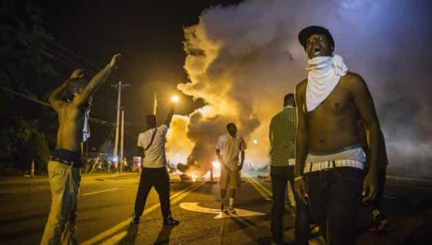
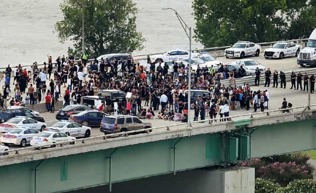
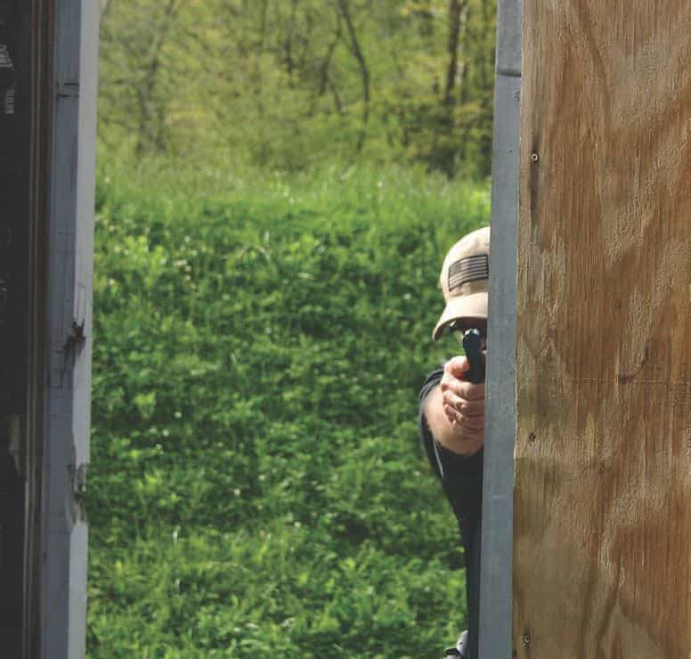

"You know, walk the earth, meet people... get into adventures."


As we move into the fall of 2016, violent confrontations between black men and police of varied ethnicities continue to occur and be televised on national news, inevitably followed by the Black Lives Matter movement, which attempts to stop the shooting of black people by police because they are feared to be violent and felonious by being violent and felonious. Leaving aside their dubious logic, it is quite possible that any ROK reader living in or visiting America might find themselves on the wrong side of a riot, so here’s some advice on that potential situation.
Whether you’re a swastika-packing 1488 Stormfronter, or a Bernie Sanders hipster, if you’re white, the BLM is going to hate on you, definitely beat you up and rob you, possibly rape you (if you’re female or they’re gay), and maybe even kill you. This goes the same for Asians, and probably Hispanics and anything other than black people. Hell, you might even need to be Wesley Snipes black to be truly immune from harm.
Point being, there’s no reasoning with these people at this point, and you need to regard ALL of them as dangerous, and only work on getting yourself out of there. There are three main situations where you might find yourself up against the BLM.

If you’re out for a night on the town, and you turn the corner and there’s the riot, you have some quick decisions to make. Best thing to do is head the other direction immediately in a quiet and discreet manner. Similar to the typical zombie movie, if you can get away without the mob noticing you, you win.
If they do notice you, now is the time to run like hell provided you have a decent lead on them. Part of my yet-to-be-written guide on tactical clothing is to always wear shoes in which you can run, and, although I will defer to my colleague Mr. Halleck’s works on fitness, part of my standards is being able to run a good ways at the drop of a hat.
What if they’re close and they notice you? They’ll approach and either immediately engage in violence on your person, or start talking a big game, gearing themselves up for engaging in that same violence. Hopefully you’re armed.
The legality here is reasonable expectation of harm. The mob has disparity of force; they don’t need to be armed, although some will be, to be a lethal threat to you. However, you need to wait for a clear threat; you cannot legally shoot a mob not doing anything, but, on the other hand, you do not need to wait for them to assault you either. If they are assaulting someone else with deadly force, or they say something implying they are about to assault you with deadly force, that is the green light for you to employ self defense.
Once they notice you and start heading your way, I’d draw whatever weapon you have and hold it at your side. As soon as it escalates into justifying lethal force, pick the leader, and put one upper-center mass. Headshots are hard to do, and you’re looking for some shock value here; anything having to do with the trachea will make some pretty disgusting noises.
If it’s a small mob, chances are it will break if you blast their ringleaders and they will run from you. If it’s a big mob, you have a brief moment while the mob will flounder for a second after you’ve taken out the leader, and that is when you run like hell. You may have to periodically turn and shoot at some people chasing you, but they should get the hint. Conserve ammo.
I’m not a knife fighter; about all I know is you’re going to get cut in a knife fight no matter how good you are. Saps and batons are also good weapons; pepper spray, not so much. You may have to make an improvised club if you have nothing. If you truly have nothing, throw the first punch and put him down, and that might be enough in itself.
In a one-on-one shooting, I advise shooting to end the threat which should also kill the guy, then unloading the gun and calling the cops and filing as the victim. The more important part of this is to never let it get this far. Your job, when on the move on foot, is to see everyone before they see you and immediately head the other way if you see trouble. I would recommend the “The Talk: Non-black version” for the required mentality. I’ve got no issue with most any single black person, but, when there’s a lot of them and non-black you in the same area, you can get killed even if you’re not racist.

The BLM seems to delight in blocking roads and being general pains in the ass. While this is illegal, it’s not something for which you can shoot them, or even run them over. However, just like the above scenario when you’re on foot, you can, and should, employ deadly force when the mob has done so to others, or makes threats to do so to you.
This includes things like breaking a car window, trying to open a door, or trying to disable your vehicle. I would use any sort of physical contact with the car as a wide definition of trying to disable the vehicle. This also goes for any credible threat to do so, and it doesn’t have to be the guy you aim for that said it. All that is required is you being legitimately in fear of your life, or of your companions, or of serious injury.
Do not get boxed in. Always leave a drivable space behind the car in front of you, and you should never hang out in the middle lanes, or left lane, of highly trafficed roads. Once you can no longer change lanes freely, you should stay in the right lane, keep a space, and be vigilant once you come to a stop.
Let them protest, but the instant they turn violent, even if it is not your car, pull onto the shoulder, and punch it. The idea here is an impressive, but controllable speed. 30 mph is plenty fast to wreck a rioter and keep your momentum up, but not make you lose control. You want them to be diving for cover, not getting ready to swing at your vehicle. Lay on the horn, do not stop, and hit anyone who won’t move.
Once clear, you will need to call this in. Might want to call the lawyer first, briefly, but you need to identify as the victim to the police, and you want to be first, because someone in the mob got you, your vehicle, and your license plate on their phone’s camera, and, as fast as you can say Dindu Nuffin, they’re going to be saying they didn’t do anything to deserve it. Remember, they started being violent, and you were in fear for your life.
Lastly, if you do get boxed in, or your vehicle is disabled, you may need to abandon it. You may want to use it as cover, then refer to the previous “on foot” section.

The media made a big deal about the Pulse Nightclub shooting when a bunch of patrons were killed when they were hiding in the bathroom. People don’t realize the power of having predictable entryways to a position. Get lined up on the door to the room you are in, and drop the first guy who breaks the door down. If you’ve got a club or a knife, stand to the side of the door with the doorknob, and stick him or smack him as he comes in. If you’ve got a gun, get a rest, and you may punch through to the guy behind him as well.
That being said, always have another exit so you don’t get trapped in there. Stay away from windows and keep lights off so you can hide. Once you’ve got a room secured, this is a great time to call the cops. Say exactly where you are and clearly state how scared you are. Feel free to embellish on the size of the mob, its violence, and any threats they may be yelling. This will get the police there faster, establish your innocence before the fact in case you have to shoot, and also put the blame of the shooting on the police since they were obviously not there fast enough if said shooting does, in fact, occur.
A worse scenario is fleeing into a building that is hostile already. Best thing to do there is keep moving and haul ass out the back door.
While this is theoretical on my end, and backed up by advice from various experts quoted throughout, your mileage may indeed vary. Your main takeaways need to be to stay armed, stay vigilant, and remain in control of the situation, because your odds go way down once you directly face off with a riot. Stay safe.
Read More: The Mindset You Must Have For Concealed Carrying A Handgun